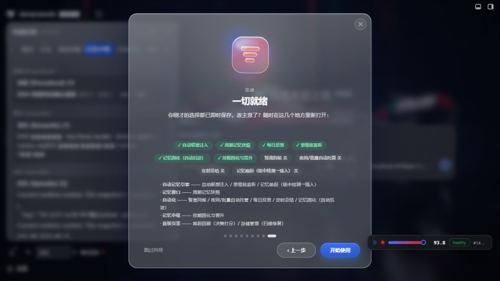
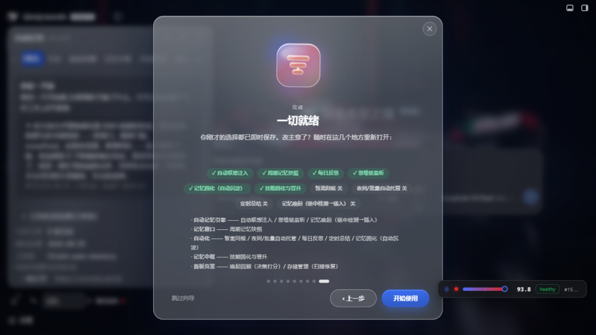
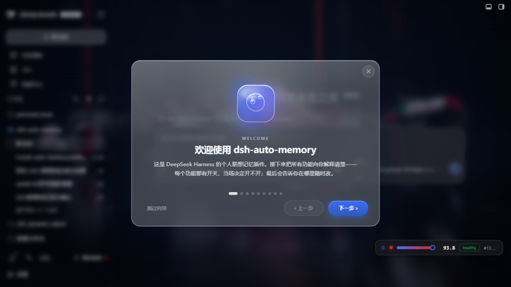
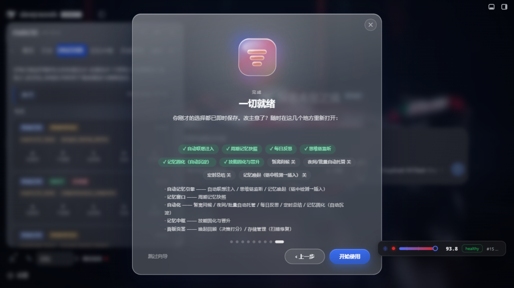
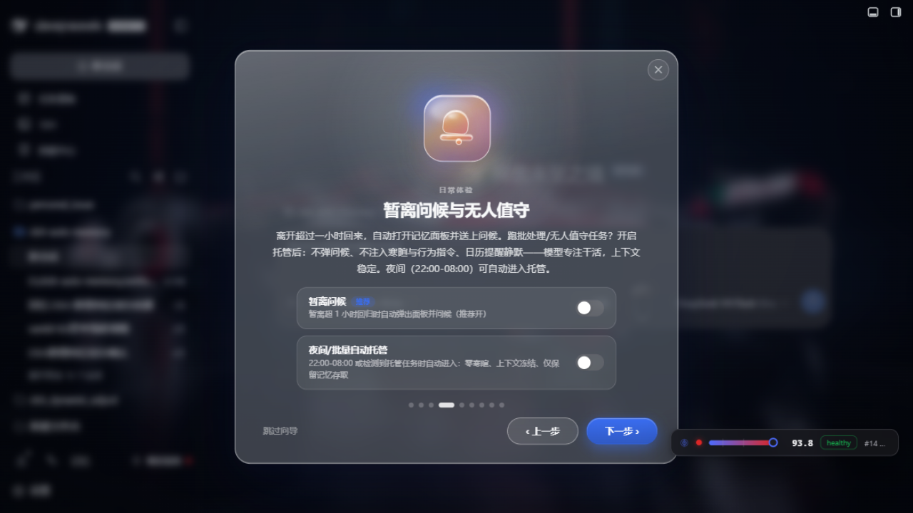
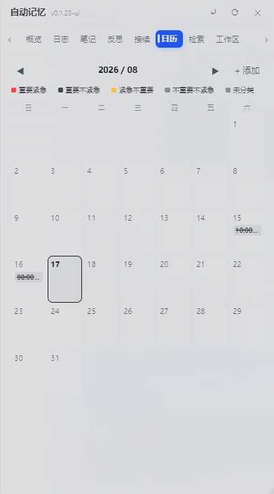
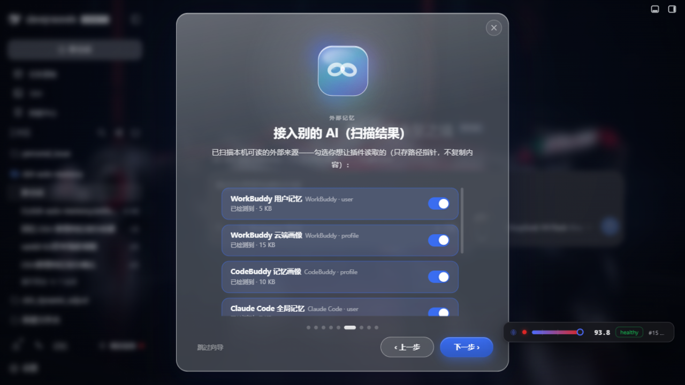
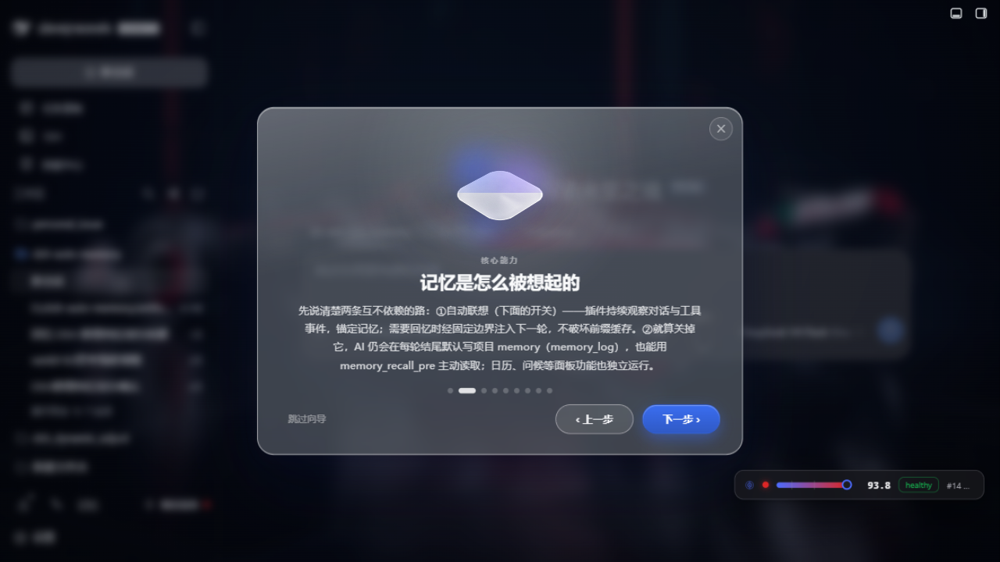

观察 → 检索决策 → 投递闭环。NLP 关键词与向量化双轨并行，唤起必要性由统一策略管线回答——每一步都有 JS 权威层做最终仲裁，AI 只在边界内干活。
持续观察每轮对话、工具回包、用户/助手事件，定位有"长期价值"的内容。
先按相关性排序（词法 BM25 保底 / 内置向量 / BGE-M3），再按"该不该打断你"两车道分流。
提示词字节级稳定，前缀缓存持续命中；每次投递留下 delivered/seen 证据喂回决策。
逐项展开，不省略——你想知道它"到底能干什么"，往下读就对了。
用户级 → 项目笔记 → 每日日志/反思，越往下越新鲜、越往上越稳定。注入策略按这个分层严格区分：静态纪律进 system prompt 保缓存，动态记忆只取最近 1 天，其余按需 recall。
~/.dsh/memory/MEMORY.mdworkspaces/{ws}/MEMORY.mdworkspaces/{ws}/YYYY-MM-DD.md…/reflections/YYYY-MM-DD.md
每轮对话结束，一个小型子代理静默评估本轮内容——长期有价值的主题分组写入今日日志（## 主题（HH:MM） + 要点），长期决策晋升项目笔记，跨项目规则晋升用户级，闲聊跳过。

升级或首装后自动播放的分步向导——Office/Fluent 式液态玻璃应用图标族，每项功能当场开关立即生效；中途关闭会先落到"完成提醒"步，告诉你每个功能在设置的哪个分区重新打开。

联想式记忆唤起在对话链中检测回忆需求，命中即注入下一环节（不破坏前缀缓存）；高频流程固化为技能 checklist 自动附上，跨会话验证后晋升——每一次"要不要打断你"的决策都能在「唤起回顾」页复核打分。

设置 → 自动化提供手动开关与夜间自动托管（22:00-08:00 可调）；托管期间不注入欢迎语/寒暄/行为指令、日历提醒静默、上下文保持稳定——模型专注干活，token 花在正事上。

按时段（晨/午/晚）生成提及你当日最重要工作的问候；暂离超过 1 小时回来，记忆面板自动打开并送上"欢迎回来"+近期工作摘要；每天第一次会话主动呈现前一日结构化反思。
自然语言提问，AI 自动扩展关键词扫描全部记忆层，会话式回答并标注来源；面板「工作区」页签自动生成工作区关系图——AI 归纳主题与跨区关联，可拖拽/缩放/点卡片看详情。
AI 从对话中识别截止日期/约定自动入日历（calendar_add），未完成事项注入后续会话直到完成；日视图 07:00-22:00 时间轴、地点/提醒字段、紧急度语义色。

WorkBuddy / CodeBuddy / Claude Code / Codex 的历史会话与记忆可扫描发现、按源导入（只存路径指针，不复制内容）、按源删除；导入侧 + 注入侧双重卫生闸门防外部脏数据混入。

三个写入工具全部过 sanitizeForWrite：GBK 乱码（34 特征全表）、复读退化、连续重复行、外部 AI 画像 JSON 特征、base64 残留——全部拒写并给出中文回执。设置 → 调试中心「扫描脏 token」一键按行区间报告问题（只报位置不含正文）。

memory_maintain_pre 把 30 天前的每日日志交给 AI 蒸馏：只提炼有跨会话长期价值的要点（技术决策/架构约定/偏好/踩坑规则），写入项目笔记；原文保底归档到 archive/（AI 不可用时降级为原样归档，绝不丢信息）。
这些不是"特性"，是"在你能用它之前先让你放心"的工程承诺——少一点跑得快的东西，多一点能跑得久的东西。
从欢迎向导到唤起回顾——每个截图都是真实运行画面。
前置：安装 DeepSeek Harness 并至少启动过一次 dsh web。
在 profile 目录（~/.dsh/profiles/web）执行：
cd ~/.dsh/profiles/web pnpm add @a9i5k4/dsh-auto-memory
没有 pnpm？npm install @a9i5k4/dsh-auto-memory 同样可用。
编辑同目录 package.json，在 dsh.profile.bundles 数组追加：
"dsh.profile.bundles": [ "...", "@a9i5k4/dsh-auto-memory" ]
重启 dsh web——侧边栏出现「记忆」入口，进入即触发欢迎向导。
dsh web
设置 → 自动记忆页「检查更新」按钮可一键比对 npm 最新版；或直接：
cd ~/.dsh/profiles/web pnpm up @a9i5k4/dsh-auto-memory
复制下面这段发给你正在用的 AI 助手即可：
在 DeepSeek Harness web profile 目录 ~/.dsh/profiles/web 安装 npm 包 @a9i5k4/dsh-auto-memory（pnpm add 或 npm install）， 把 "@a9i5k4/dsh-auto-memory" 追加到 package.json 的 dsh.profile.bundles 数组， 然后重启 dsh web 激活插件。
系统要求：dsh web 跑起来即可，Node 内建依赖足够；Python 档可选（用于 BGE-M3 进阶语义档，失败自动回退词法检索）。
dsh-auto-memory 不是一个"我一个人写的项目"——下面这两位是塑造产品形态的真正合作者。
欢迎 issue / PR——即使只是改一个标点或一句文案，也算参与。